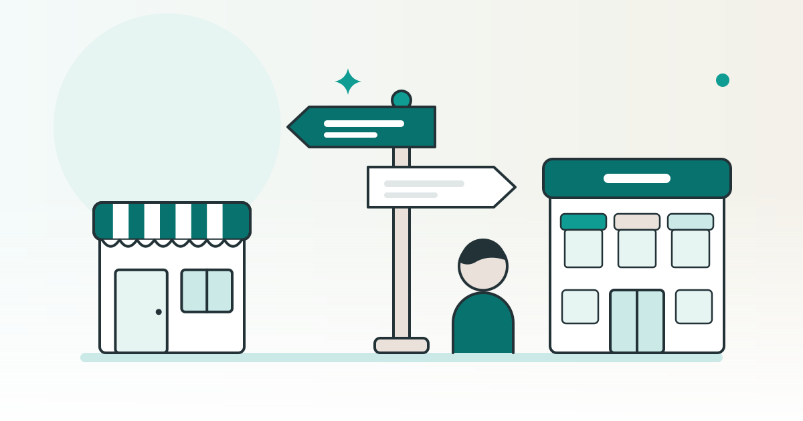

SHOPKIT コラム
ネットショップはどこで開く？開く場所の違いと選び方

ネットショップを開こうとして、サービスの名前や料金表を見比べていませんか。先に、どんな売り場にしたいか、誰に商品を見つけてもらうかを決めると、確認する項目を絞れます。各社の順位を付けずに、開く場所を選ぶ順番を整理します。
この記事は、完成品のネットショップを販売している SHOPKIT が書いています。
自分のお店を作る型と、モールに出す型から考える
開く場所を考えるときは、お店の名前や売り場を中心に組み立てる形と、複数のお店や商品が集まるモールの中で販売する形に分けてみましょう。ここでは、前者を「自分のお店を作る型」、後者を「モールに出す型」と呼びます。
自分のお店を作る型を考えるなら、商品の並べ方や説明、店全体の見せ方で、何をしたいかを書きます。モールに出す型なら、その売り場に来る人へ商品をどう説明したいか、出店にどんな条件があるかを確認します。
BASEやShopifyなどの名前を候補にしている場合も、使いたい形と確認事項を決めてから比べましょう。機能や料金の最新情報は各社の案内で確かめます。サービス名だけで、自分の販売方法に合うかは決められません。
「服を売りたい」という予定を、「サイズと色の選択肢をどう見せたいか」「注文をどう確認したいか」まで具体的にします。個人の開業でおすすめを探すときも、自分が必要な作業に置き換えて読むと、比較の軸を作れます。
費用は、発生する場面と計算の条件を並べる
料金を比べる前に、同じ場面で何に支払うのかをそろえましょう。候補ごとに、次の項目を確認する欄を作ります。
- 利用を始めるときと、続ける間にかかる費用。
- 注文や決済があったときにかかる手数料と、その計算の対象。
- 入金のときにかかる費用と、受け取りの条件。
- 必要な機能を追加する場合の費用と、別の契約の有無。
- 契約を変更・終了するときの費用と、申出の条件。
すべての項目に費用があるという意味ではありません。掲載が見つからない欄は、かからないと決めずに問い合わせます。案内のURL、確認した日、対象のプラン、回答を一緒に残しましょう。
手数料の割合を見るときは、何の金額に掛かるのか、固定額が加わるかも確かめます。期間を限った条件なら、その後の条件も同じ欄に書きます。異なる前提の表示を、そのまま安さの順位にしないことが大切です。
仕入れや梱包、配送など、お店側で用意する費用も別の欄に整理します。サービスの利用料だけで、販売を続ける支出の全体を判断しないようにしましょう。
関連：ネットショップの開業資金はいくら？始め方別の初期費用と毎月のお金
集客は、見つけてもらう場所から商品ページまで追う
候補を比べるときは、「誰が、どこで商品を知り、どのページから買うか」を書き出します。自分の発信から来てもらう予定なのか、売り場の中で探す人に見つけてもらいたいのかを、販売の計画として分けましょう。
モールを検討するなら、売り場の中で商品が見つかる場所と、そこへ掲載される条件を確認します。自分のお店を作るなら、検索やSNSなどから商品ページまで、どのような案内を用意するかを考えます。どちらも、候補の名前から集客の結果を予測しないようにします。
出店先が用意する仕組み、自分が準備する写真や説明、追加で支払う広告などを分けてメモにします。「集客の機能がある」という説明を見たら、対象になる条件と、自分で行う作業まで確認しましょう。
あわせて、売り場として必要な案内を載せられるかも確認します。消費者庁の通信販売の案内には、販売条件の表示や、注文を確定する前の画面に示す事項が説明されています。
出典：消費者庁通信販売のルールの広告表示・申込み段階の表示。自分の販売方法で必要な表示は、公式資料と窓口で確かめてください。
自分が伝えたい発送や返品の条件を整理し、どこへどう表示するかを確認します。掲載できる場所があることと、必要な内容がそろっていることを分けて見ましょう。
移る・やめる場合は、データと残る注文を確かめる
使い始める前に、後で別の場所へ移る場合も考えておきます。商品の情報、写真、注文の記録などについて、取り出せるか、どの形式か、どこまで使えるかを候補ごとに確認しましょう。
- 商品名、説明文、価格や選択肢など、保存したい情報がそろうか。
- 写真やデザインに、移った先で使える権利があるか。
- 商品ページのアドレスや店の名前を、変更するときの条件は何か。
- 注文の記録を残す方法と、退店後に確認できる範囲は何か。
- 未発送・返品・返金や入金の処理が残る場合、どう対応するか。
データを取り出せる場合も、移った先へそのまま登録できるとは限りません。出力する項目と移行先で必要な項目を照らし、どの作業が残るかを確認します。顧客の情報を使う場合は、利用目的や契約の条件も確認する項目に入れましょう。
終了の申出期限、利用停止後の記録、問い合わせ先もまとめます。比較のメモには、確認できた内容と、回答を待っている内容を分けて残します。
完成品を買う場合も、利用する場所の条件を確認する
自分で画面を作る以外に、完成品のネットショップを買って始める選択肢もあります。用意されたお店を選ぶ場合も、どのサービスを使うかと、何を受け取るかを分けて確認しましょう。
SHOPKITは、デザイン済みのお店、仕入れ先などの情報、運営と集客のマニュアルをお渡しする形です。お店一式には、ブランド名とロゴ、お店の持ち主としての権限が含まれます。
出典：2026年10月15日時点のSHOPKITのお渡しするもの。
受け取る商品情報や説明文、写真が、自分の売りたいものと合うかを見ます。使う場所の費用や契約の条件、日々自分で行う確認も、候補の一覧へ書き加えましょう。完成品を買う選択と、出店先を選ぶ確認を、一緒に進めることが大切です。
関連：ネットショップは作る？買う？始め方の手間と費用を比べる
候補を絞る前に、譲れない条件を文章にする
最後に、売りたい商品、届けたい相手、必要な見せ方、自分で続ける作業を短い文章にします。候補の機能表を眺める前に、何を確かめるかを決めるためのメモです。
例えば、サイズの説明を重視したいなら、用意するサイズ表と写真を決め、それを表示する方法を確認します。注文後の作業に不安があれば、注文の確認から発送の記録まで、必要な情報を扱えるかを確認します。
必要な条件が満たせる候補について、費用、集客の準備、移るときの条件を同じ順で比べます。分からない点を問い合わせ、確認日と回答を残してから選びましょう。
関連：ネットで起業するには｜ネットショップで始める流れと準備
よくある質問
ネットショップを開く場所の費用は、どう比べればよいですか？
始めるとき、続ける間、注文や入金があったとき、終了するときに分けて確認します。対象プランと計算の条件、確認日をそろえ、見つからない項目は問い合わせましょう。
開く場所を選ぶとき、集客について何を確認しますか？
どこで商品を知り、どのページから買うかを予定として書きます。売り場が用意する仕組みと、自分で準備する写真や説明、追加の費用を分けて確認します。
完成品のお店を買う場合も、利用する場所の確認は要りますか？
完成品を買う場合も、利用するサービスの条件と、受け取る物を分けて確かめます。自分の売りたい商品や続ける作業に合うかを、候補の一覧で比べましょう。
※ 公的資料は2026年10月28日に確認しました。各社の料金・機能・契約条件は、利用を検討する時点の公式案内で確かめてください。この記事では、候補を比べるための考え方と確認項目を扱っています。